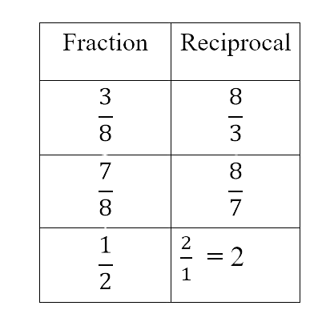
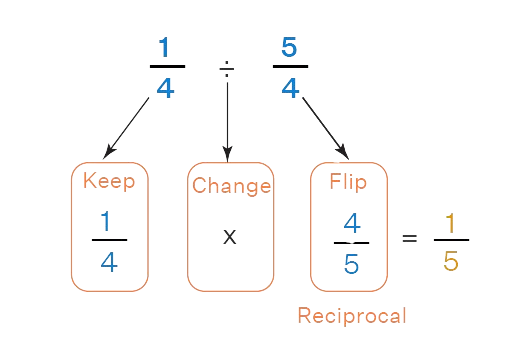

Do you love pizza?
Do you know that if you Slice a pizza,
you’ll a get fraction!
The top number says how many slices we have.
The bottom number says how many equal slices the whole pizza was cut into.
We call the top number the Numerator,
it is the number of parts we have.
We call the bottom number the Denominator,
it is the number of parts the whole is divided into.
Equivalent Fractions
Some fractions may look different, but are really the same, for example:
3
9
=
1
3
These two fractions seem different, but actually when simplifying (or reducing)
then they will have the same numerator and denominator.
Let’s do so!
We have two methods to simplify fractions:
Greatest Common Factor:
1.Find the GCF of the numerator and the denominator.
2.Divide the numerator and denominator by the GCF. The fraction so obtained is the reduced fraction.
Simplify
8
12
:
- 8=2×2×2
12=2×2×3
- So GCF=2×2=4
We should know divide both 8 and 12 by 4
We obtain
2
3
2
3
is the irreducible form (simplified form) of
8
12
Prime Factorization:
- Find the prime factorization of the numerator and the denominator.
- Cancel out the common factors of the numerator and denominator.
- Take away the remaining numbers in the numerator and
denominator to find the reduced fraction.
See the example:
6
24
=
2 × 3
2 × 3 × 2 × 2
=
1
4
Reciprocal of a fraction
To get the reciprocal of a fraction, just turn it upside down.
In other words swap over the Numerator and Denominator.

Multiplying a Fraction by its Reciprocal:
When we multiply a fraction by its reciprocal we get 1:
2
3
×
3
2
= 1
Adding Fractions
To add fractions they SHOULD have same denominator.
To add fractions there are Three Simple Steps:
- Step 1: Make sure the bottom numbers (the denominators) are the same
- Step 2: Add the top numbers (the numerators), put that answer over the denominator
- Step 3: Simplify the fraction (if possible)
See the example:
2
6
+
1
6
=
2 + 1
6
=
3
6
Now try yourself to simplify the fraction according to what you just learned.
But what about if they have different denominator?
In order to make the denominator common, you can use the LCM method:
- First, we find out the Least Common Multiple
(LCM) of the given denominators.
- Then, we write down each fraction in a form such that the LCM becomes the common denominator.
For this, we multiply the numerator and
denominator with a common number with the help of the LCM.
- After this step, we add the numerators
of these like fractions (which have common denominators now).
- Finally, we reduce the resultant fraction to its lowest terms, if needed.
See the example:
1
2
+
3
5
=
7
3
=
15
30
+
18
30
+
70
30
=
15 + 18 + 70
30
=
103
30
If you’re confused how we calculated the lcm of 2,5 and 3,
don’t hesitate to visit the link Least Common Multiple to have the way clarified.
Subtracting fractions
Same as addition, they SHOULD have same denominator to be
subtracted
There are 3 simple steps to subtract fractions:
- Make sure the bottom numbers (the denominators) are the same
- Subtract the top numbers (the numerators).
Put the answer over the same denominator.
- Simplify the fraction (if needed).
Example:
3
4
-
1
4
=
3 - 1
4
=
2
4
Now try yourself to simplify the fraction according to what you just learned.
But what about if they have different denominator?
In order to make the denominator common, you can use the LCM method:
- First, we find out the Least Common Multiple (LCM) of the given denominators.
- Then, we write down each fraction in a form such that the LCM becomes the common denominator.
For this, we multiply the numerator and
denominator with a common number with the help of the LCM.
- After this step, we add the numerators of these like fractions
(which have common denominators now)
- Finally, we reduce the resultant fraction to its lowest terms, if needed.
See the example:
21
4
-
8
3
63
12
-
32
12
=
31
12
Multiplying fractions
There are 3 steps to multiply fractions:
- Multiply the top numbers (the numerators)
- Multiply the bottom numbers (the denominators)
- Simplify the fraction if needed.
4
5
×
3
7
=
4 × 3
5 × 7
=
1
3
Dividing fractions:
There are 3 Simple Steps to Divide Fractions:
- Step 1. Turn the second fraction (the one you want to divide by) upside down
(this is now a reciprocal).
- Step 2. Multiply the first fraction by that reciprocal
- Step 3. Simplify the fraction (if needed)
